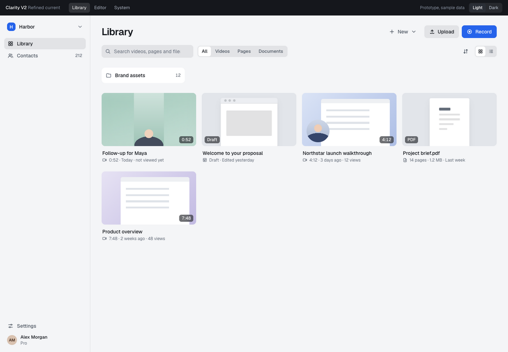
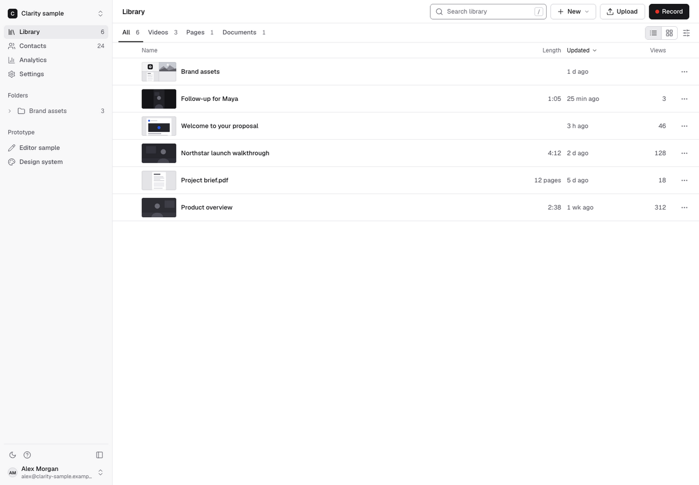
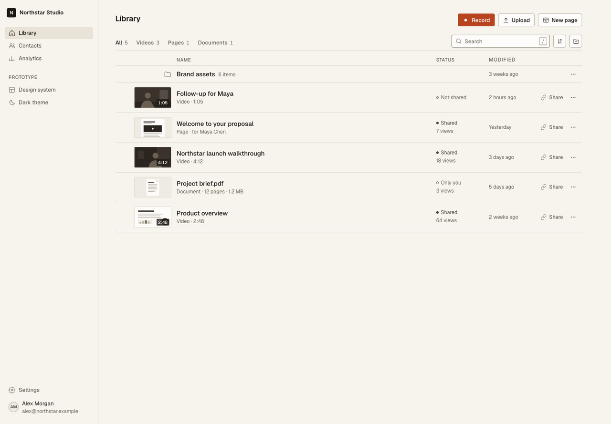
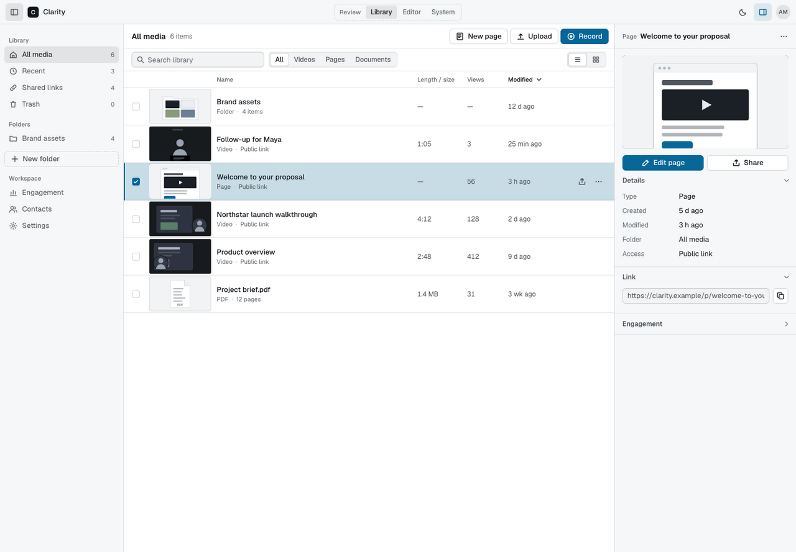

V2
Refined current
Keep familiar structure and a restrained sense of depth. Remove repeated bevels, heavy outlines, and competing button treatments.
Four ways to simplify the interface. Each proposal includes the library, page editor, sharing flow, and component states in light and dark mode.
Open a direction to try it, or compare it with V1. All content is fictional.

Keep familiar structure and a restrained sense of depth. Remove repeated bevels, heavy outlines, and competing button treatments.

Use typography, spacing, neutral fills, and precise separators for hierarchy. Clear action placement keeps the media unobstructed.

Organize work around documents and projects. Warm neutrals and a content-led hierarchy give the workspace a more editorial character.

Work from a selected item and its inspector. Stable navigation and contextual tools connect browsing, editing, and sharing.
A source-based reproduction of the current system, with the same fictional content.